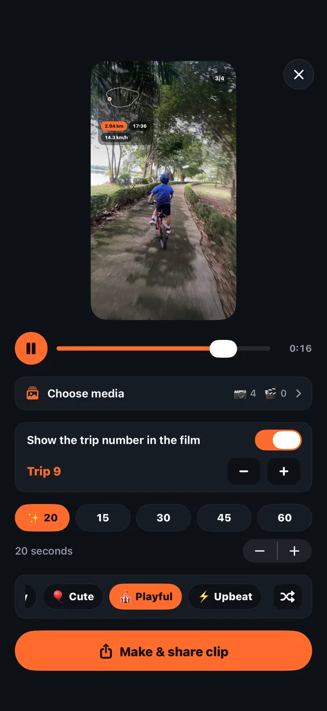

15–60 spick the length
🎵 With musicmade on your phone
01 · AUTO RECAP
Every ride
Every ride
becomes a movie
The app weaves the route, the stats, and the photos and clips you took along the way into a vertical recap video with music, ready for the family chat.
- The real route draws itself, with photos pinned where they happened
- Pick a music mood, shuffle, or go without music
- Trim each clip down to the best moment